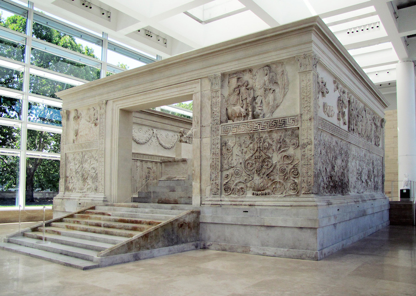

Comparison: Where Ancient Rome Meets the Modern Day
Both Augustus and Trump avoided using traditional propaganda strategies and political pathways to convey their messages, instead preferring to speak directly to their supporters and nations. Specifically, the two political leaders used propaganda to preserve their political power while also shaping the public's perception of them. Although they are separated by over two thousand years, both of the political leaders understood that long-term political power did not depend only on their accomplishments, whether it was winning battles or passing laws, but also on how the public viewed them.
Ancient World
Context: Augustus authored his own autobiography, the Res Gestae, which is found all across the ancient Roman Empire. He used it to emphasize and justify his seizure of the throne, describing it as a selfless service to Rome.
Evidence: In the Res Gestae, Augustus writes that he raised an army all "on [his] own initiative and at [his] own expense" in order to free the Roman Empire from "the tyranny of a faction."1 He defined himself as Rome's rescuer rather than its conqueror, as he selflessly defended the Roman people.
Augustus, writing his own autobiography, reveals how he understood how crucial controlling one's narrative and public perception is, as he deliberately framed his violent military conquests and the takeover of the Roman Republic as liberation from corrupt rulers. His portrayal of his conquests directly demonstrates how he manipulated narratives to produce propaganda that would support him. Augustus painted the picture that he was restoring, then maintaining, republican values rather than calling himself a dictator, creating the illusion that his interests were in maintaining the republic rather than military conquest or control over the empire. As scholars note, the Res Gestae served as "Augustus' self-glorifying propaganda, cementing his legacy across the Empire."2 Augustus authoring his own autobiography demonstrates his understanding of the importance of manipulating the public's perception of him in order to maintain power.
Modern World
Context: Similarly, Trump used X, formerly known as Twitter, and Fox News to manipulate his political story. During the 2016 and 2024 presidential elections, Trump avoided and criticized mainstream news outlets, even calling them fake news. Instead, he communicated directly with supporters through social media and news outlets that favored and supported his image crafting.
Evidence: Trump has managed to develop one of the largest followings on X, gaining most of his followers during the 2024 election, with over 95 million. He used X for personalized messaging in order to rally his supporters and manipulate his and his opponents' public images without relying on journalistic mediation.3 He posts videos, slogans, and messages to his followers to portray his perspective on his narrative while also attacking his opponents and criticizing traditional social media organizations.
Trump bypassing traditional media outlets parallels Augustus's utilization of the state to back his propaganda. Both of these leaders understood that controlling public perception and maintaining follower support were important to maintaining power. Although they used different approaches to craft their public images, with Augustus creating public statues and writing an autobiography while Trump used social media and amassed followers on the platform, their overarching goals were the same: to shape public perception in order to maintain, if not increase, their political power. Both Augustus and Trump demonstrated that although the tools used for propaganda may change over time, the importance of propaganda in power remains consistent over millennia.
Summary
Both Augustus and Trump portrayed themselves as saviors and fighters against corruption, particularly for the republic. Augustus self-proclaimed that he restored peace and maintained the republican values after the civil war, while Trump describes himself as fighting against corrupt elites and opponents. Both political leaders use propaganda to create a personal connection with their supporters to strengthen their political power.

Ancient World
Context: Augustus built monuments, printed his face on coins, created statues, and constructed architecture that he spread throughout the Roman empire to promote his public image as someone who represented the people and fought for peace. The majority of Romans would never have met Augustus in person, resulting in these public works becoming the main ways people saw his leadership.
Evidence: One of the most famous structures that Augustus constructed was the Ara Pacis Augustae, also known as the Altar of Augustan Peace. The altar was built between 13 and 9 BCE and directly demonstrates his use of public works to spread propaganda and manipulate his supporters. The monument was created to celebrate the peace and stability that Augustus declared to have brought to the Roman Empire after the civil war and other violent conquests. The monument depicts Augustus and the royal family in a tranquil and peaceful manner.6 Scholars have called it "a masterclass in ancient propaganda," as Augustus "presented himself as the divinely appointed savior, the restorer of the Republic."7
The Ara Pacis Augustae highlights how Augustus utilized visual imagery to show his self-proclaimed promotion success and unity during his rule. Augustus associates himself with peace, family values, and resilience through creating public works and his autobiography, among other means. Augustus carefully crafted a perfect image for himself to gather the support and loyalty of the Roman people. Instead of ruling only through military power and introducing laws for the people, he strengthened his public image by using propaganda, shaping how the Romans perceived him, and creating a direct connection with his followers, allowing him to garner more power.
Modern World
Context: Donald Trump, similar to Augustus, took propaganda into his own hands by creating his own social media platform, Truth Social, in 2022 in order to communicate directly with his supporters rather than relying on external media organizations. After Trump was removed from many major social media platforms in response to the January 6 Capitol attack, Trump pioneered Truth Social.
Evidence: Trump posts dozens of times every day on his platform, Truth Social. He posts to promote his political views while conflicting with and criticizing his opponents' views, helping him rally supporters and followers. Trump controls this platform completely, allowing him to spread messages without depending on traditional news organizations, being censored, or having opposing views to his.8 One Republican strategist explained that Truth Social is "where you get your marching orders if you're MAGA."9
Truth Social demonstrates that Trump understands how to control his own political image with a key modern tool at his disposal: social media. Just like how Augustus used public works and an autobiography, Trump created his own platform to freely communicate directly with his followers. Trump posting dozens of times a day reveals how he continuously reinforces his image and narrative constantly while also maintaining a direct source of connection with his supporters. Both of these leaders recognized that controlling the media, whether it was physical or digital, was crucial to holding onto power.
Footnotes
- Augustus Caesar, Res Gestae Divi Augusti, 14 CE, trans. Thomas Bushnell, MIT Internet Classics Archive, accessed 2026, https://classics.mit.edu/Augustus/deeds.html. ↩
- "Augustus — Master of Propaganda: Why Did Augustus Write the Res Gestae?" Academia.edu, accessed 2026, https://www.academia.edu/43341321. ↩
- SAIS Review of International Affairs, "Social Media, Disinformation, and AI: Transforming the Landscape of the 2024 U.S. Presidential Political Campaigns," Johns Hopkins University, January 14, 2025, https://saisreview.sais.jhu.edu/social-media-disinformation-and-ai-transforming-the-landscape-of-the-2024-u-s-presidential-political-campaigns/. ↩
- Image: Smarthistory, "Ara Pacis Augustae," accessed 2026, https://smarthistory.org/ara-pacis/. ↩
- Image: Al Jazeera, "Donald Trump's Social Media Company Soars in Wall Street Debut," March 27, 2024, https://www.aljazeera.com/economy/2024/3/27/donald-trumps-social-media-company-soars-in-wall-street-debut. ↩
- History Skills, "The Ara Pacis: The Ultimate Demonstration of Emperor Augustus' Propaganda Machine," accessed 2026, https://www.historyskills.com/classroom/ancient-history/ara-pacis/. ↩
- Wonderful Museums, "Museum Ara Pacis: A Definitive Guide to Rome's Augustan Masterpiece," accessed 2026, https://www.wonderfulmuseums.com/museum/museum-ara-pacis/. ↩
- Yini Zhang and Scott W. Campbell, "Trump, Twitter, and Truth Social: How Trump Used Both Mainstream and Alt-Tech Social Media to Drive News Media Attention," Journal of Information Technology & Politics 22, no. 2 (2024), https://doi.org/10.1080/19331681.2024.2328156. ↩
- NPR, "Trump's Truth Social Lays Bare Narrow Obsessions of an Extremely Online President," May 8, 2026, https://www.npr.org/2026/05/08/nx-s1-5749358/trump-truth-social-online-posts-iran-white-house-ballroom. ↩